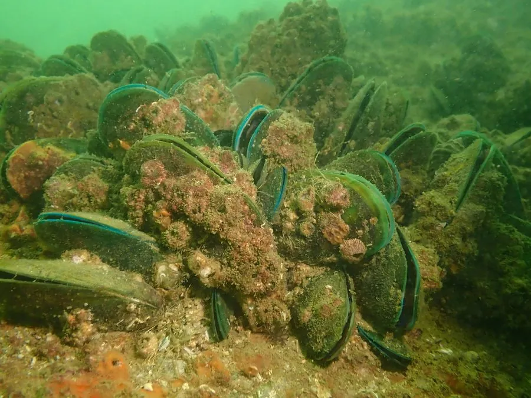

软体动物 · 动物界
翡翠贻贝 Perna viridis

壳面翠绿、壳形前尖后宽的大型贻贝，靠足丝附着在潮间带岩石与码头，俗称青口，是南方沿海常见的养殖贝类。
- 分类
- 门软体动物门纲双壳纲目贻贝目科贻贝科属股贻贝属
- 栖息环境
- 潮间带中下区至水深数米的岩石、码头、浮筏和红树林根部
- 地理分布
- 印度洋至西太平洋热带亚热带沿岸，包括中国南方沿海、东南亚和澳大利亚北部
- 保护级别
- 尚无保护级别；会富集赤潮毒素与重金属，食用需注意产地水质
物种志
翡翠贻贝的贝壳呈楔形，壳长可达十五厘米，前端尖细，后端宽圆，壳质厚实，壳表光滑，呈鲜艳的翠绿色至暗绿色，幼贝的绿色更亮，老贝则偏褐绿，壳内面是带虹彩的珍珠层。它的足丝发达，从足部伸出成束的细丝，把身体牢牢固定在岩石、桩柱和缆绳上。水管短，壳缘有细齿。
它分布于印度洋至西太平洋的热带和亚热带沿岸，包括中国南方沿海、东南亚、印度和澳大利亚北部，栖息在潮间带中下区至水深数米的岩石、码头、浮筏和红树林根部，常密集附着形成层层叠叠的贝床，滤食水中的浮游藻类和有机颗粒。它是雌雄异体，繁殖期在春夏，幼虫浮游数周后附着变态，生长迅速，一年可达性成熟。它在南方被大量养殖，俗称青口，可鲜食或加工成干品。它尚无保护级别，但会富集赤潮毒素和重金属，食用前需注意产地水质。
形态与习性
- 壳长可达十五厘米，楔形，前尖后宽
- 壳色翠绿至暗绿，老贝偏褐绿
- 附着足丝成束，固定于岩石、桩柱和缆绳
- 栖息水层潮间带中下区至水深数米
- 食性滤食浮游藻类与有机颗粒
- 风险可富集赤潮毒素和重金属
趣味知识
- 它的壳绿得像上了釉，是沿海最容易认出的贝类之一。
- 一束束足丝像细麻绳，把它拴在桩柱上，怎么拉都拉不掉。
- 它滤食时会把水里的毒素一并攒下，赤潮期间不宜采食。